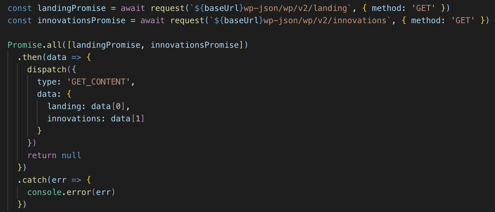
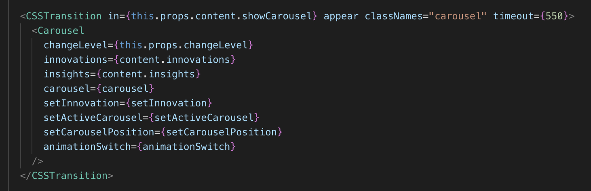
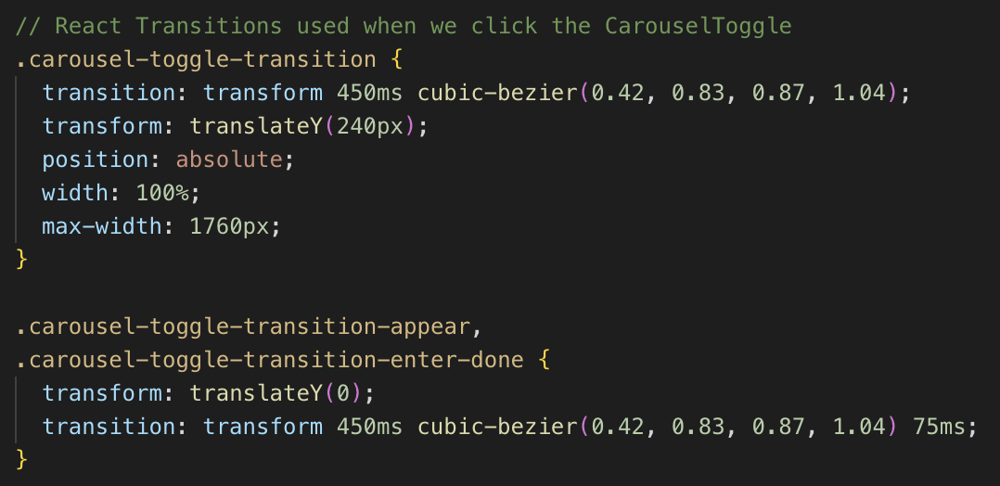

They were looking for a clean and simple way to show their guests about their company
The way CGI would do this -> an interactive display with insights into the company
An added bonus: Make their guest feel like the company is up to cool stuff
Requirements
Create a stand alone application
It had be interactive, with a clean and concise user interface
The content had to be controlled via a CMS
Deliver the app before their office opened - short turnaround
Upfront Challenges
Make boring content be somewhat interesting - easily consumed
Going to be building a stand alone application
The CMS would have to be hosted on CGI's intranet
Implementation
First Steps
Pick the stack:
Electron
React + Redux
WebGL
Wordpress using WP-JSON
Implementation
Starting the work
Talk with the team involved
Find a boilerplate
Familiarize with the new tools
Conceptualize the app's architecture
Implementation
Specific Challenges
Getting the animations just right. GSAP or CSS? 🤔
Ensuring the app works like it should on a touch device
Adding some amount of 'native' feel to app. 'Not a website...'
Keeping a high FPS. The app is the user's sole focus
Implementation
The details

Getting the data needed for the app

A common pattern used through out the app for the transitioning of components

...How the app's components would be shown/hidden in CSS